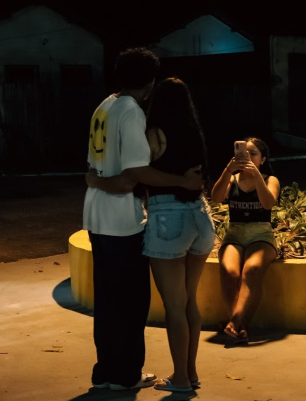
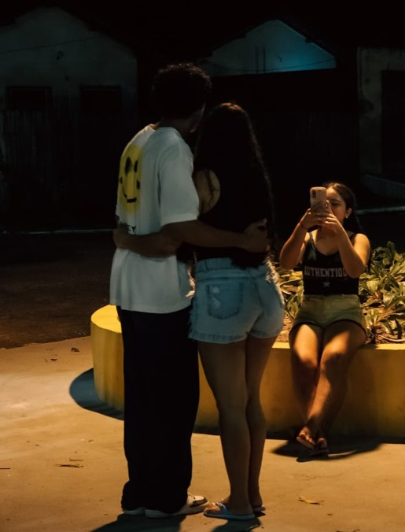

Reencontro com Geh
Página 8 - Presença e Carinho
Vista de fora, sentida por dentro
 

A gente só queria uma foto juntos. Um registro. Um daqueles que a gente olha depois e pensa “foi real”. E então, alguém pegou a câmera e clicou. Dois cliques. Dois segundos. Duas fotos.
E quando eu vi… eu senti. Foi como se, pela primeira vez, eu pudesse ver de fora aquilo que sempre senti aqui dentro. O jeito que a gente se encaixa. A forma como meu corpo abraça o teu como se já soubesse o caminho. E seu rosto encostado no meu, leve, tranquilo, como quem finalmente encontrou paz.
Essas fotos não foram nossas mãos que tiraram. Foram olhos de fora que captaram o que a gente muitas vezes nem percebe: que existe felicidade no ar quando estamos juntos. Que tem algo bonito, sincero e suave no simples fato da gente existir ali, lado a lado.
E é engraçado… eu sempre quis guardar memórias da gente. Mas essas duas fotos me guardaram. Elas capturaram algo mais do que uma pose. Capturaram sentimento. Conexão. A verdade que nem precisa de legenda.
Foi só um instante. Mas um instante que disse tudo. A luz amarela da praça, o silêncio da noite, a moça com a câmera… e nós dois, sem saber direito o que fazer, mas sabendo que aquilo era especial.
Hoje, quando olho essa imagem, meu coração se aquece. Porque ali tem tudo o que eu não soube dizer: o quanto estar com você me deixa leve. O quanto o mundo parece parar quando te abraço. O quanto aquela noite foi simples… mas perfeita.